Cuando cae un árbol grande en Murcia, es a él a quien llaman.
Poda de palmeras y arbolado en Murcia, hecha por quien lleva 38 años subido al tronco.
Trasplante de palmeras de gran tamaño, limpieza, cirugía y tratamiento del picudo rojo, diagnóstico de arbolado y diseño de jardines. Maquinaria propia y el mismo especialista de principio a fin.
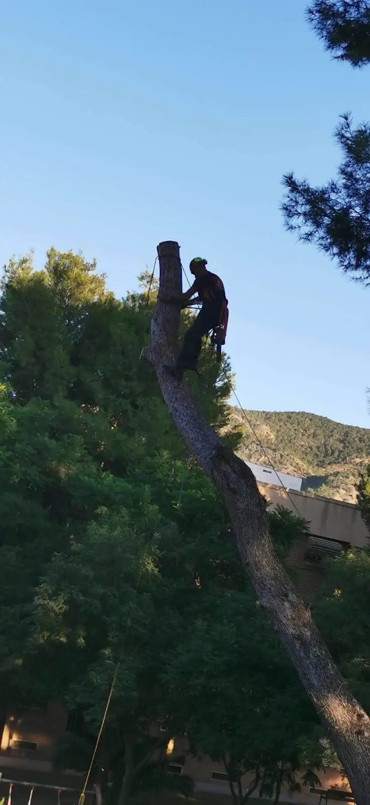
"Una palmera grande no se traslada, se planifica." — Víctor Arce Vicente, palmerero
Víctor Arce Vicente (Torreagüera, Murcia, 1971) se formó en 1988 en una escuela taller de jardinería y desde entonces se especializó en palmeras: es de los profesionales que suben al tronco para podar, limpiar y tratar cada ejemplar de cerca, no desde el suelo.
Poda3.0 trabaja con maquinaria propia para mover ejemplares grandes y con el mismo criterio en cada intervención: diagnosticar antes de cortar, tratar antes de perder la palmera, y planificar el trasplante antes de mover una raíz. La especialidad es la palmera, de la limpieza rutinaria al trasplante de gran porte y el tratamiento del picudo rojo, pero el trabajo cubre también el arbolado y el jardín completo: diseño, plantación y venta de planta.
Servicios
Especialistas en palmeras, con maquinaria propia para el trasplante de ejemplares grandes. Se presupuesta cada trabajo tras la visita.
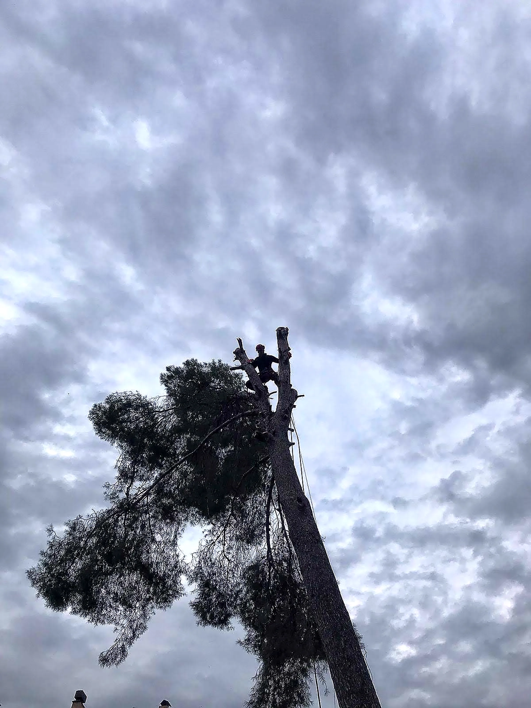
Poda en altura de árboles y palmeras
Apeo dirigido, poda de formación y poda sanitaria, trabajando atado directamente al tronco — sin depender siempre de una grúa o una plataforma elevadora. Es el trabajo que Víctor lleva haciendo desde 1988.
Trasplantes especiales
Traslado de palmeras de gran tamaño con maquinaria propia: extracción con cepellón, transporte y replantación.
visita técnica previa obligatoria Ver más sobre el trasplante ↗Limpieza de palmeras
Retirada de hoja seca y racimos para reducir peso muerto en la copa y riesgo de caída o incendio.
mantenimiento anual recomendadoDiseño y realización de jardines
Planos de plantación, selección de especies por clima y exposición, y ejecución completa de la obra.
presupuesto tras visita Ver más sobre el diseño de jardines ↗Venta de planta
Palmeras, árboles y planta de jardín seleccionados según el proyecto, con asesoramiento de especie y ubicación.
bajo pedido y por proyecto Consultar por WhatsApp ↗Cirugía y tratamiento del picudo rojo
Diagnóstico, cirugía y tratamiento fitosanitario de ejemplares afectados por el picudo rojo (Rhynchophorus ferrugineus).
actuación urgente según gravedad Ver más sobre el tratamiento del picudo rojo ↗Informes y diagnóstico
Informes de arbolado y palmáceas: estado fitosanitario, riesgo estructural y recomendaciones, para particulares y comunidades.
informe escrito con fotografíasCómo trabajamos
Cuatro pasos, siempre en el mismo orden, para que sepas qué esperar antes de que llegue nadie a tu jardín.
Visita y diagnóstico
Evaluamos la palmera, el árbol o el jardín: estado, tamaño, acceso para maquinaria si hace falta. Sin coste.
Presupuesto por escrito
Detalle de tareas y precio cerrado. Sin letra pequeña ni compromiso de permanencia.
Ejecución
Se acuerda fecha y horario. En trasplantes y cirugía, trabajamos con el equipo y maquinaria adecuados a cada ejemplar. El corte y la maquinaria necesaria para el trabajo los aportamos siempre nosotros; la recogida y retirada de los restos es opcional, si el cliente la quiere incluida.
Seguimiento
Revisión posterior en trasplantes y tratamientos, para confirmar el arraigo o la evolución del ejemplar tratado.
Trabajos realizados
Una selección de trabajos reales: trasplantes, limpiezas y jardines terminados. Esto es solo una muestra, no todo el trabajo hecho.
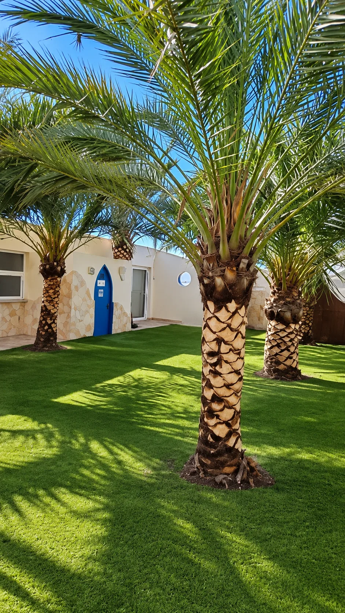
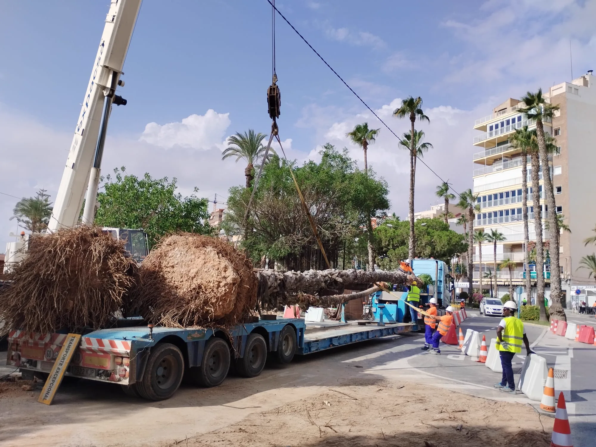
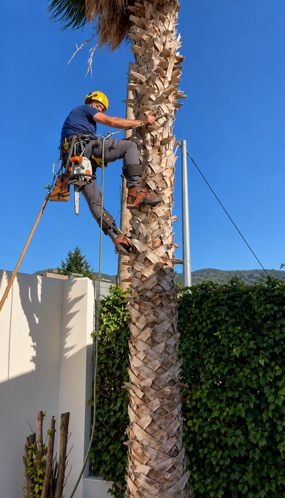

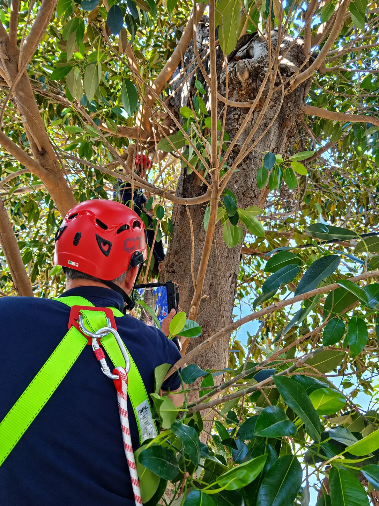
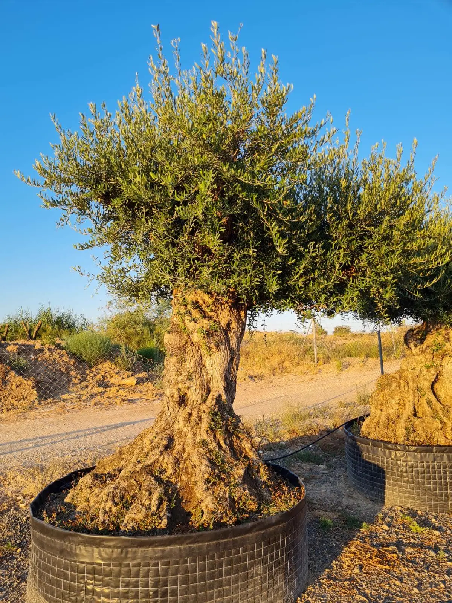
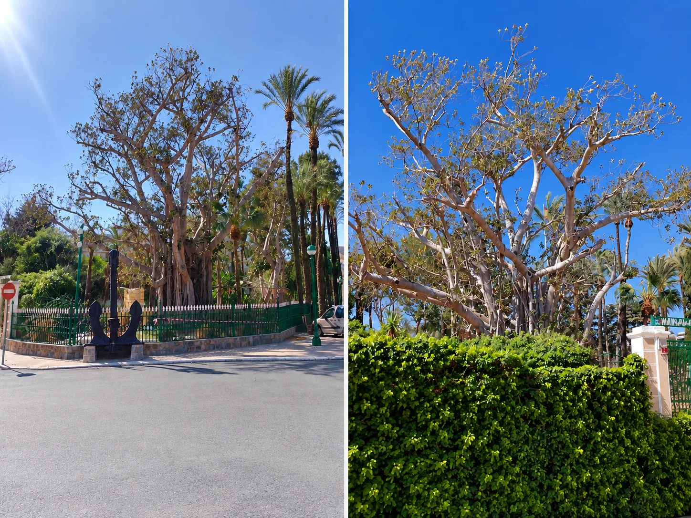
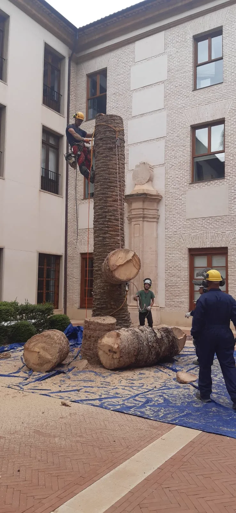
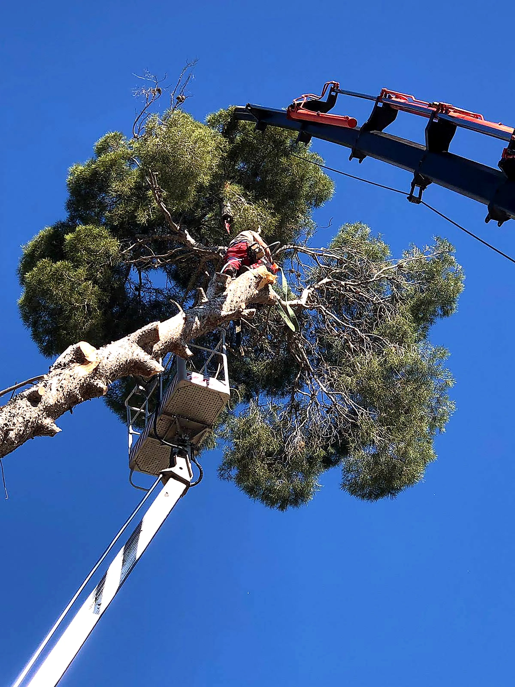
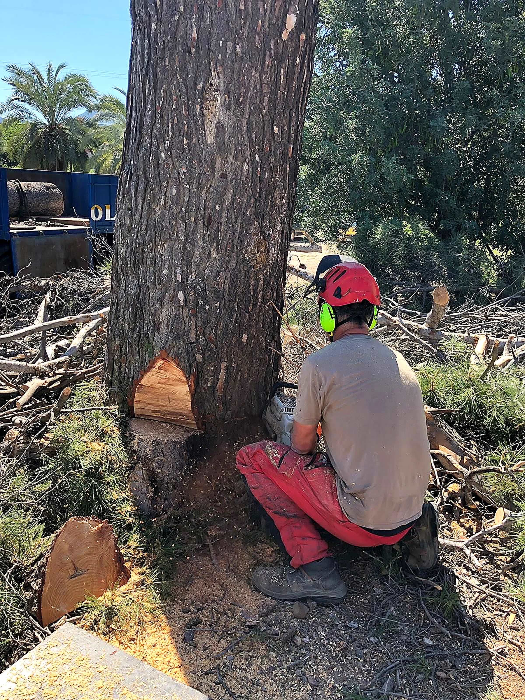
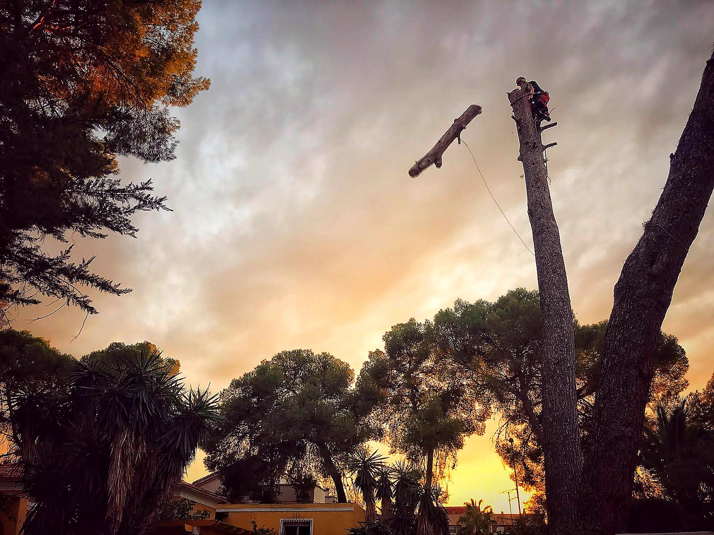
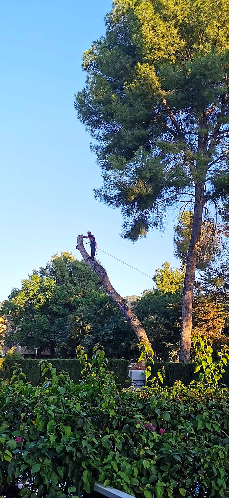
Afeitado de palmeras
Retirada de las bases secas de las hojas del estípite para dejar el tronco liso, con el dibujo en rombos a la vista — un acabado estético habitual en jardines y urbanizaciones.
Trasplante de palmera de gran tamaño
Extracción con cepellón, transporte y replantación de ejemplares grandes, con maquinaria propia y sin dañar la raíz.
Tratamiento contra el picudo rojo
Diagnóstico y tratamiento fitosanitario del Rhynchophorus ferrugineus, la plaga que más está afectando a las palmeras en la Región de Murcia.
Apeo dirigido
Corte y derribo controlado de árboles de gran altura en espacios reducidos, trabajando atado y por tramos para que caigan exactamente donde se necesita.
Ver más sobre poda en altura ↗Inspección y diagnóstico de arbolado
Evaluación del estado fitosanitario y el riesgo estructural de árboles y palmeras, con informe por escrito para particulares y comunidades.
Tala de tronco
Corte y trozado del tronco de árboles que ya no se pueden recuperar, con retirada de los restos si el cliente la quiere incluida.
Por qué Poda3.0
Maquinaria propia
Equipo dedicado al trasplante de ejemplares grandes, sin depender de terceros para mover una palmera.
Un solo especialista
La persona que hace el diagnóstico es la misma que ejecuta el trabajo y responde después.
Informe por escrito
Cada diagnóstico de arbolado o palmácea queda documentado, útil para comunidades y aseguradoras.
¿Quieres aprender el oficio?
Formación práctica en poda y trepa de palmeras para quien quiera iniciarse en el trabajo. Cuéntanos tu caso.
En prensa
El oficio de palmerero, contado por dentro, y el día que medio ficus centenario cayó sobre la plaza.
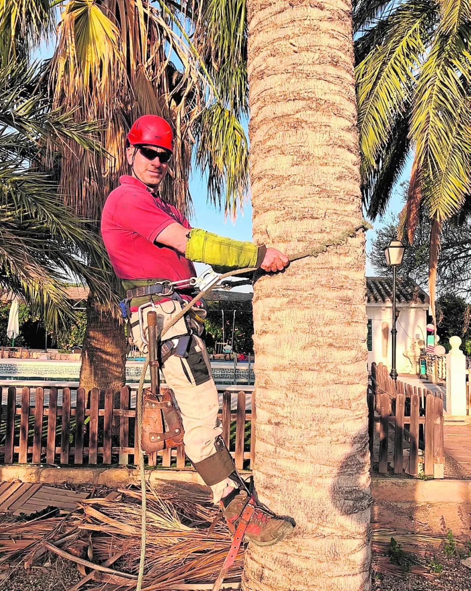
«Domingo, mi maestro, sube a las palmeras con 88 años»
Entrevista a Víctor Arce Vicente sobre el oficio de palmerero: cómo se formó en 1988 en una escuela taller de jardinería, las herramientas que usaba entonces y las que usa ahora, y el picudo rojo, la plaga que más ha cambiado el trabajo con palmeras en la Región de Murcia. Sobre su maestro, el palmerero del Ayuntamiento de Murcia que a los 88 años seguía subiendo a las palmeras, dice: "todos los profesionales de este oficio somos su reflejo".
Leer la entrevista completa en laverdad.es ↗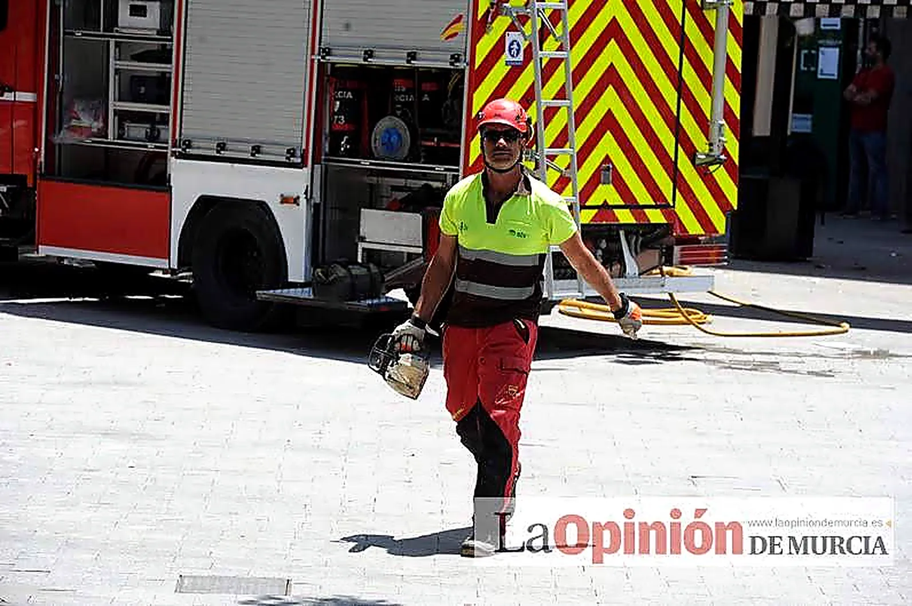
«Medio ficus cae sobre la plaza de Santo Domingo de Murcia»
Poco antes del mediodía de aquel viernes, varias ramas del ficus centenario de la plaza de Santo Domingo se desplomaron sobre las terrazas de los bares y sepultaron parcialmente una furgoneta aparcada. "Se oyó un fuerte crujido en toda la plaza y las ramas cayeron lentamente", según la Policía, lo que evitó una tragedia mayor: solo hubo daños materiales y dos heridas leves. Para el corte y la retirada de las ramas caídas llamaron a Víctor Arce Vicente, por su experiencia trabajando en altura sobre árboles y palmeras de gran porte.
Leer la noticia completa en elplural.com ↗Reseñas
Todavía no hay reseñas publicadas. Se van a ir sumando las que dejen los clientes reales, sin inventar ninguna.
¿Trabajaste con Poda3.0? Cuéntanos cómo te fue — tu opinión ayuda a que más gente confíe en el trabajo.
Enviar mi opinión por WhatsAppHablemos de tu jardín
Cuéntanos qué tienes y qué te gustaría cambiar. La primera visita y el presupuesto no tienen coste, decidas o no seguir adelante.
-
Teléfono+34 630 74 77 71
-
HorarioCon total disponibilidad
¿Empezamos por WhatsApp?
Manda una foto de la palmera, el árbol o el jardín y cuéntanos qué necesitas. Solemos responder el mismo día laborable.
Escribir por WhatsApp